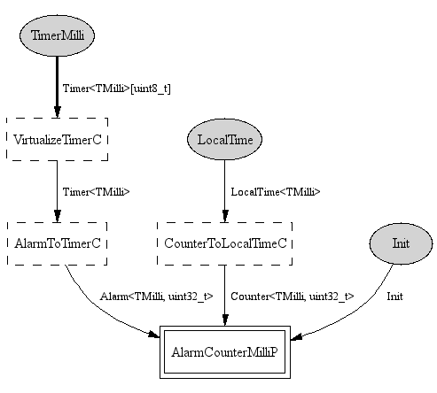

Component: tos.platforms.mica.sim.HilTimerMilliC
configuration HilTimerMilliC
Millisecond timer for the mica family (see TEP102). The "millisecond"
timer system is built on hardware timer 0, running at 1024Hz.
- Author:
-
Cory Sharp <cssharp@eecs.berkeley.edu>
-
Martin Turon <mturon@xbow.com>
Provides
interface
Timer<TMilli> as
TimerMilli[uint8_t]
Wiring
